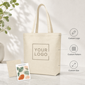

Custom Canvas Bags Manufacturer
Heavy-duty 12oz cotton canvas with custom print logos. Factory direct printing, bulk orders welcome, 100 pcs MOQ.



Canvas Bags
Natural cotton/linen, eco-friendly and durable.
Our canvas tote bags are made from premium 12oz heavy-duty eco-friendly cotton canvas with double-stitched handles and strong load-bearing capacity. As a factory-direct supplier, we support custom print logos, bulk orders, and multiple printing techniques — silk-screen printing, UV printing, heat transfer — to perfectly present your brand.
Application Scenarios
- Brand promo bags, event gift bags
- Shopping bags, eco-friendly grocery bags
- Trade show bags, conference material bags
- Creative merchandise, designer brand packaging
Available Techniques
Special Add-ons
Material Specifications
| Specification | Details |
|---|---|
| Material | 12oz polyester-cotton canvas (premium grade) |
| Weight | 8oz / 10oz / 12oz / 16oz available |
| Size | 12x15cm to 60x70cm customizable |
| Size Tolerance | ±1-2cm (industry standard) |
| Handle Type | 2.5cm / 3.2cm woven tape handles |
| Color | Natural, white, black, navy, custom PMS colors |
| Printing | Double-sided UV printing (standard area) |
| MOQ | 100 pcs per design |
| Printing Area | Up to full bag coverage |
| Lead Time | 3-5 days standard; 7-15 days bulk |
Canvas Bag Customization Options
Make your canvas bags fit your brand, budget and usage scenario.
Application Scenarios
- Brand promotion events and trade shows
- Eco-friendly retail shopping bags
- Corporate gift bags and employee welcome kits
- Conference and seminar material bags
- Wedding and event favor bags
- School and library book bags
- Restaurant takeaway and delivery bags
- Fashion brand merchandise packaging
Printing Techniques Comparison
Silk-screen Printing
- Best for simple designs
- 1-4 colors
- Cost-effective for bulk orders
- Long-lasting
Heat Transfer
- Best for full-color designs
- Photos and gradients
- Higher cost per unit
- Great for small batches
Why Canvas Bags Are the Eco-Friendly Choice
Switching from single-use plastic to reusable canvas bags is one of the simplest ways for brands to reduce their environmental footprint. Our cotton canvas bags are designed to be used hundreds of times and return to the earth without leaving harmful residues, making them a genuinely sustainable alternative for both businesses and end consumers.
- Reusable: One canvas bag replaces 300+ plastic bags
- Biodegradable: 100% natural cotton decomposes in 2-6 months
- Low Carbon Footprint: Cotton farming absorbs CO2
- Recyclable: Old bags can be repurposed as cleaning cloth
Why Choose Our Canvas Tote Bags?
As a dedicated tote bag manufacturer with over 11 years of production experience, CustomToteBagSupplier delivers premium canvas tote bags trusted by more than 5,000 corporate clients worldwide. Our factory combines traditional craftsmanship with modern printing technology, offering everything from natural cotton shopping bags to fully customized brand merchandise. Every bag is produced in-house under strict quality control, ensuring consistent color, stitching, and printing for both small batch and bulk wholesale orders.
Eco-Friendly Material
100% natural cotton canvas, biodegradable and reusable
Heavy-Duty Construction
12oz polyester-cotton canvas, double-stitched handles, holds up to 10kg
Custom Logo Printing
Silk-screen, heat transfer, DTG, embroidery — all techniques available
Frequently Asked Questions
What is the minimum order quantity?
100 pcs per design. Lower MOQ available for sample orders.
Can I get a sample before placing a bulk order?
Yes, we provide stock samples for free (shipping cost only). Custom printed samples take 3-5 days.
How long does production take?
Standard production is 3-5 business days for regular orders. Bulk wholesale orders take 7-15 business days depending on quantity. Rush orders available with surcharge.
What file format do you need for my logo?
Vector files (.AI, .EPS, .SVG) are preferred. High-resolution PNG/PDF also accepted.
What optional features can I add?
We offer multiple add-on options: gusseted bottom for extra capacity, base + side panels for structure, magnetic snap or hidden button closure, large zipper for security, inner pocket for organization, and 3.2cm wide reinforced handles for heavier loads. Contact us for custom pricing.
Do you offer worldwide shipping?
Yes, we ship globally via sea, air, and express courier. DDP shipping available.